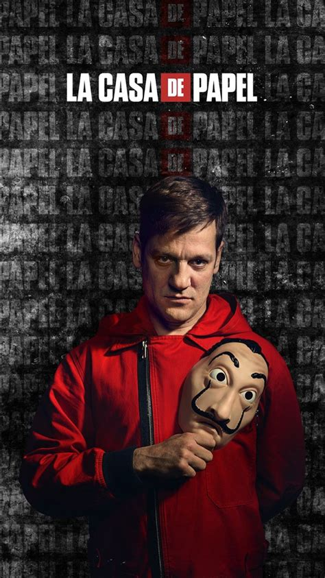
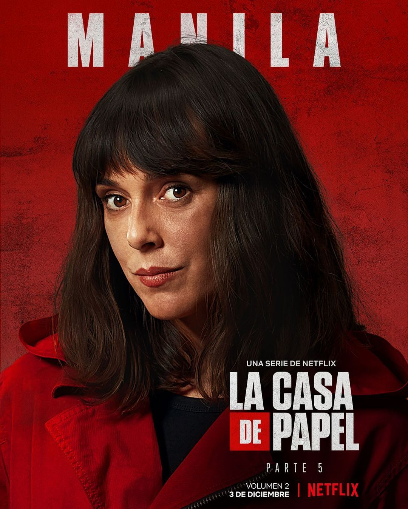

Money-heist(La Casa De Papel) one of the best web series created in spanish and later become trending on all over the world.The show premiered on the Spanish network Antena 3 in 2017 and gained international recognition when it was acquired by Netflix. It became one of the most-watched non-English language series on the platform.
The story revolves around a group of criminals who are led by a man known as "The Professor" (played by Álvaro Morte) as they plan and execute heists on the Royal Mint of Spain and the Bank of Spain. The group members adopt codenames based on cities to hide their identities and wear a red jumpsuit and a mask of the famous Spanish painter Salvador Dalí.
The show's narrative is known for its complex and intricate plotlines, with elements of drama, action, thriller, and heist genres. It explores the personal lives, motivations, and relationships of both the criminals and the hostages involved in the heists. The characters are well-developed and the series delves into their backstories and interconnections.
Professor (MASTER-MIND)

Alvaro Morte is a Spanish actor who gained international recognition for his role as Sergio Marquina, also known as "The
Professor," in the hit Spanish television series "Money Heist" (La Casa de Papel in Spanish).
Álvaro Morte's character, The Professor, is a mastermind and the orchestrator of the heists in the series. He recruits a
group of eight criminals and leads them through meticulously planned heists on the Royal Mint of Spain and the Bank of
Spain. The Professor is known for his calm demeanor, strategic thinking, and ability to adapt to unexpected situations.
Tokyo
In the popular Spanish TV series "Money Heist" (La Casa de Papel), Tokyo is one of the main characters and also serves
as the show's narrator. Tokyo, whose real name is Silene Oliveira, is portrayed by Spanish actress Urusula Corbero
Tokyo is introduced as a young, impulsive, and passionate criminal who joins the heist planned by the enigmatic
mastermind known as "The Professor." Throughout the series, Tokyo's voice-over provides insights into the events and
emotions surrounding the heist.
She becomes an integral part of the gang and plays a crucial role in executing the heists on the Royal Mint of Spain and
the Bank of Spain. Tokyo's character is known for her resilience, resourcefulness, and ability to adapt to unexpected
situations.
Berlin
In the TV series "Money Heist" (La Casa de Papel), Berlin is one of the main characters and a key member of the heist
crew.
Berlin is portrayed as an enigmatic and eccentric character with a strong personality. He is the older brother of the
mastermind known as "The Professor" and serves as the group's lead strategist during the heists on the Royal Mint of
Spain and the Bank of Spain.
Berlin is known for his refined taste, impeccable manners, and his ability to maintain control in high-pressure
situations. He exudes confidence and often displays a charismatic and manipulative demeanor. Despite his assertive
nature, he is shown to have a softer side, particularly in his relationships with fellow crew members.
Berlin has a complex backstory, and his character arc delves into his personal life. He has a terminal illness and is
aware of his limited time left to live, which adds an extra layer of urgency to his actions and decisions.

Rio
.jpg)
n the TV series "Money Heist" (La Casa de Papel), Rio, whose real name is Aníbal Cortés, is one of the main characters
and a member of the heist crew.
Rio is introduced as a young computer expert who joins the heist orchestrated by "The Professor." He is skilled in
technology and plays a crucial role in hacking and maintaining the group's communication systems during the heists on
the Royal Mint of Spain and the Bank of Spain.
Rio's character is initially depicted as shy, introverted, and somewhat socially awkward. He is shown to be deeply
invested in his relationship with Tokyo, with whom he forms a romantic connection. Their relationship adds an emotional
layer to Rio's character arc throughout the series.
As the series progresses, Rio undergoes significant character development. He becomes more assertive and grows in
confidence, particularly after facing challenging situations and threats to his life. Rio's character highlights the
impact the heist has on the individuals involved, both in terms of personal growth and the toll it takes on their mental
and emotional well-being.
Raquel Murillo
In the TV series "Money Heist" (La Casa de Papel), Raquel Murillo, also known by her alias "Lisbon," is one of the
central characters.
Raquel is initially introduced as an inspector working for the Spanish National Police. She becomes involved in the
heist planned by "The Professor" when he manipulates events to make her an unwitting ally to the heist crew. Raquel
plays a pivotal role throughout the series, both as an adversary to the heist crew and later as a member of the crew
herself.
As an inspector, Raquel is portrayed as intelligent, determined, and principled. She initially works tirelessly to bring
down the heist crew and apprehend them. However, as the series progresses, Raquel finds herself drawn to the charismatic
and enigmatic "Professor," leading to a complex relationship between the two characters.
Denver
Denver, whose real name is Ricardo Ramos, is a fictional character in the Spanish television series "Money Heist" (La
Casa de Papel). He is portrayed by actor Jaime Lorente. Denver is one of the main members of the heist crew led by the
enigmatic mastermind known as "The Professor."
Denver's character is known for his playful, easygoing nature and a sense of humor that often lightens the tense
situations faced by the heist crew. He is the son of another crew member, Moscow, and their father-son relationship
plays a significant role in the series. Denver is shown to be deeply attached to his father and their bond adds an
emotional layer to his character.In terms of appearance, Denver has a distinctive style with long curly hair and often wears a red jumpsuit and a
Salvador Dalí mask during heists, which have become iconic symbols of the show.
Alicia Ceira
In 1996, Nimri formed the musical duo Najwajean along with producer Carlos Jean, launching No Blood, an early instance of a trip-hop album in Spain.[2] She first appeared in a film with a leading role in Jump into the Void (1995),[3] eventually becoming one of the big names of 1990s and 2000s Spanish cinema. Film roles that came after her debut include performances in Passages (1996), Open Your Eyes (1997), Blinded (1997), Lovers of the Arctic Circle (1998), Asfalto (2000), Sex and Lucia (2001), and Fausto 5.0 (2001).
Alba Flores
Alba Flores is the only daughter of musician and composer Antonio Flores and Ana Villa, a theatrical producer. Her family consists of Romani performers, musicians, and actors: She is the granddaughter of Lola Flores, known as "La Faraona" ("The Pharaoh"), niece of singers Lolita Flores and Rosario Flores, and cousin of actress Elena Furiase. Her paternal grandfather, Antonio González referred to as "El Pescaílla" was also a Spanish singer and guitarist, and is considered to be one of the fathers of Catalan Rumba. She is Romani. Alba studied dramatic interpretation from the age of thirteen, with secondary training in piano performance. In her brief career onstage, she performed in a number of roles, most notably in Luna de miel en Hiroshima (Honeymoon in Hiroshima) (2005), and the Romani version of A Midsummer Night's Dream (2007)
Stockholm
Esther Acebo (born 19 January 1983) is a Spanish actress, presenter and reporter. As an actress she has appeared in Los encantados (2016) and achieved worldwide fame in Money Heist (2017).
Acebo studied physical activity and sport sciences at the University of CastillaLa Mancha. Her first opportunity came as host of the children's program Kosmi Club. After this, she became a reporter and presenter on youth channel Non Stop People
On May 2, 2017 Money Heist premiered, in which she played Mónica Gaztambide (Stockholm), who later became one of the main characters.
Palermo

De la Serna started his career in several smaller productions like Same Love, Same Rain and Nuts for Love. In 2000, he portrayed Ricardo Riganti in the Canal 7 series Okupas, now considered an Argentine cult classic. In 2004 starred in the biopic The Motorcycle Diaries for which he won a Silver Condor award for best actor, an Independent Spirit Award for "Best Debut Performance" and earned him a nomination for a BAFTA Award for Best Supporting Actor. He played the role of Alberto Granado, the travelling companion of Che Guevara during their 8-month long journey through South America.
Manilla

Belén Cuesta. Julia joined the crew of robbers as requested by Moscow and Denver to The Professor, as they promised her father, Benjamin, that they would take care of her. Although she was not included in the Royal Mint of Spain robbery, she did participate in the Bank of Spain heist. Her task consists of being among the other hostages, pretending to be one of them as a form of crowd control. She constantly fakes needing to go to the bathroom to be able to inform the robbers about any developments. She is eager to drop the ruse and join the other robbers and eventually does so to prevent Arturo Román from revolting, shooting him in the leg.
